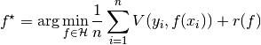
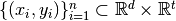
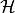

Algorithmic Layer¶
This layer implements various algorithms that are used by upper layers (NLA primitives and ML applications).
Regression Framework¶
Located under algorithms/regression aims at providing a general framework for handling regression problems of the following form:

where  is a training set of inputs
and their associated outputs,  is an hypothesis space of functions,  is a loss function,
is a loss function,  is a regularizer.
is a regularizer.
At this point, the c ode only supports a linear hypothesis space and a least-square loss function without regularization. That is, solving problems of the form

However, the framework defines the API for defining problems of the form above, and the API for solvers for those problems. Implementation of additional solver is slated for future development.
The framework is general, but complex: it relies on generic programming to supply a unified powerful interface. A much simpler functional interface is supplied in the NLA primitives layer. See Randomized Linear Least-Squares. Note that not all the features supplied by the regression framework are exposed in the simplified interface.
A running example is provided in libskylark/examples/regression.cpp.
Basic Components¶
- type struct skylark::algorithms::regression_problem_t<InputMatrixType, RegressionType, PenaltyType, RegularizationType>¶
Describes a regression problem on a data matrix. The target values are supplied when the solver is invoked). Except for the InputMatrixType template parameter, other template parameter accept tags that describe various choices in the general regression problem formulation from the start of this page.
- type class skylark::algorithms::regression_solver_t<RegressionProblemType, RhsType, SolType, AlgTag>¶
A solver for the regression problem (aka regression_problem_t) supplied in the contructor. A solver can then solve specific instances given by the target values using the solve method. This class is for ‘classical solvers’, i.e. solvers that do not use sketching to accelerate the solution.
The RegressionProblemType should be a specialization of regression_problem_t.
The AlgTag template parameter allows flexability in defining more than one algorithm given a RegressionProblemType.
- type class skylark::algorithms::accelerated_regression_solver_t<RegressionProblemType, RhsType, SolType, AlgTag>¶
Like regression_solver_t, defines a solver for the regression problem supplied in the constructor. Here, one uses algorithms that are accelerated using sketching. Note, that the solver is accelerated, and not approximated. That is, the original, and not an approximation, of the regression problem is solved.
- type class skylark::algorithms::sketched_regression_solver_t<RegressionProblemType, RhsType, SolType, SketchedRegressionType, SketchType, SketchRhsType, SketchTransformType, ExactAlgTag>¶
Approximate regression solver using sketching (sketch-and-solve). The basic idea is that a regression problem is sketched, and then the new problem is solved exactly.
To Be Expanded...¶
Krylov methods¶
To be added...